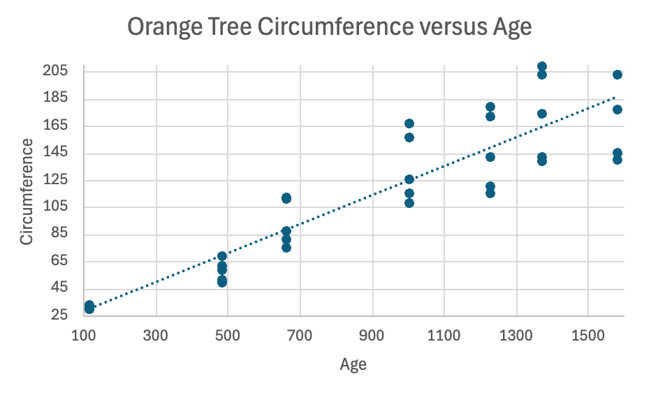
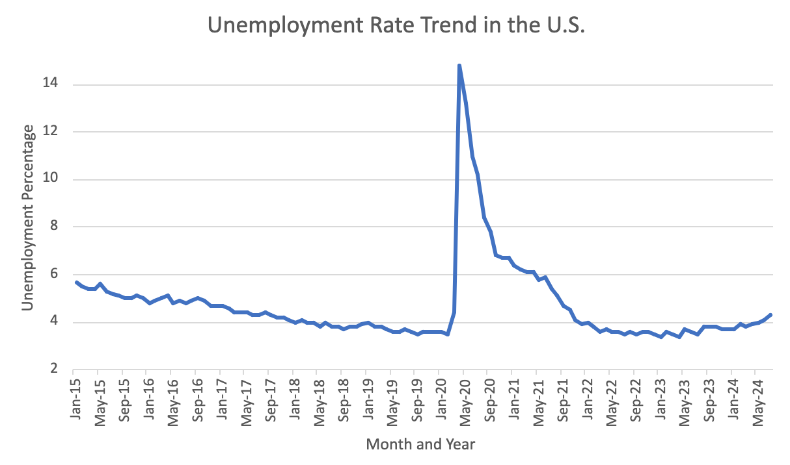
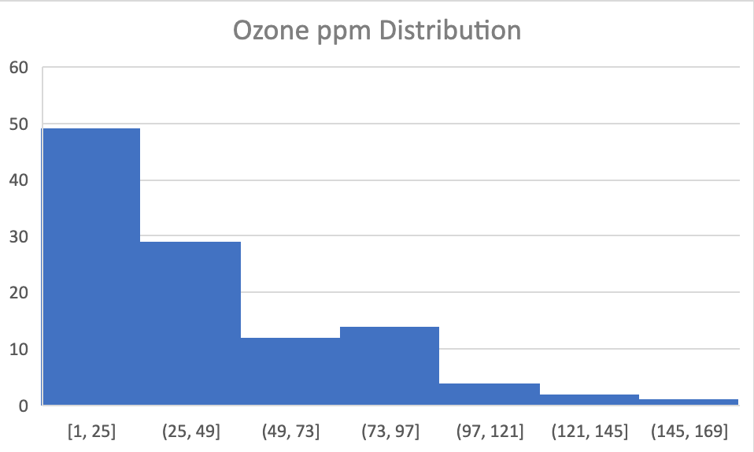
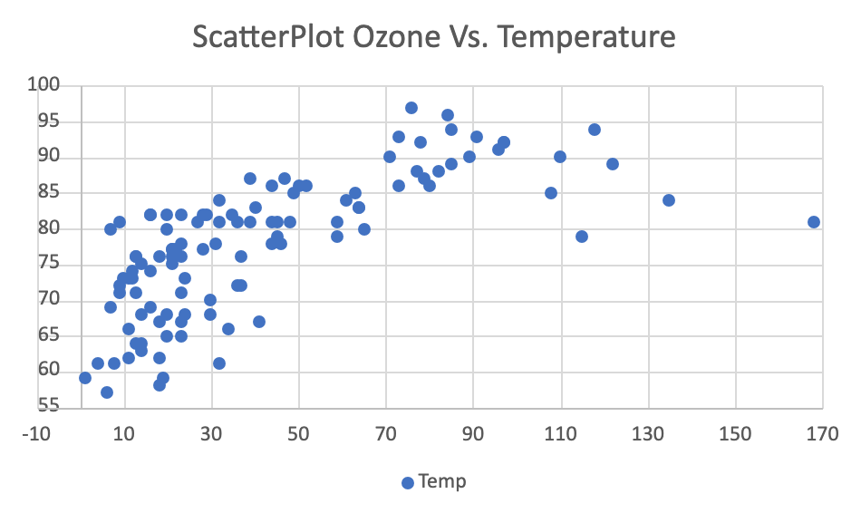
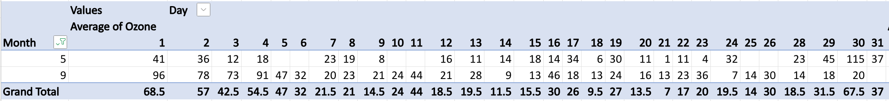
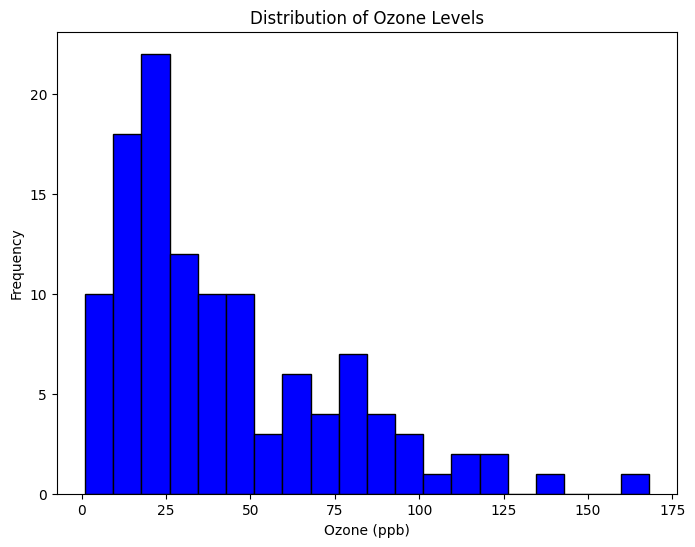
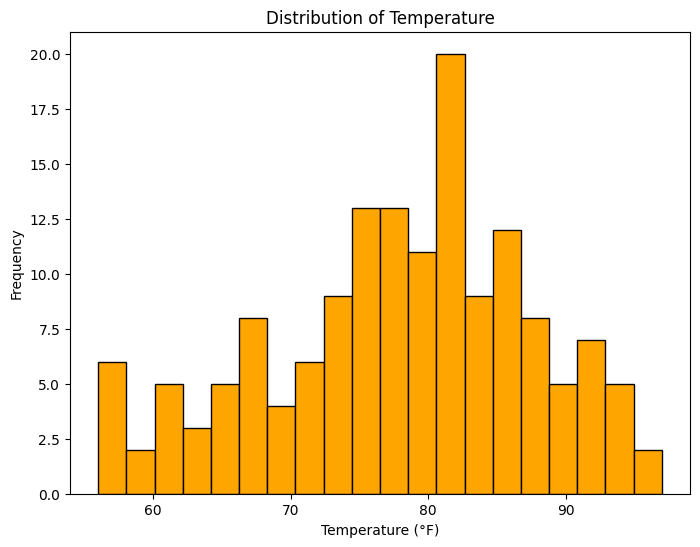
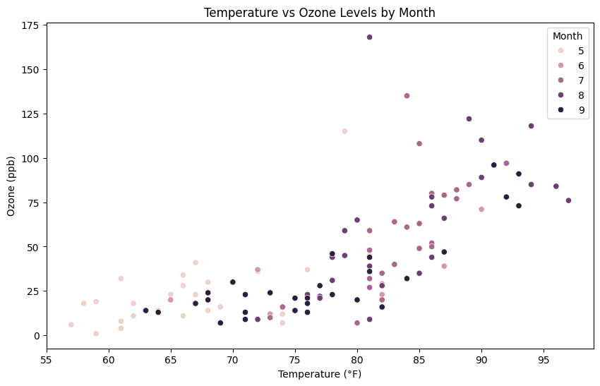
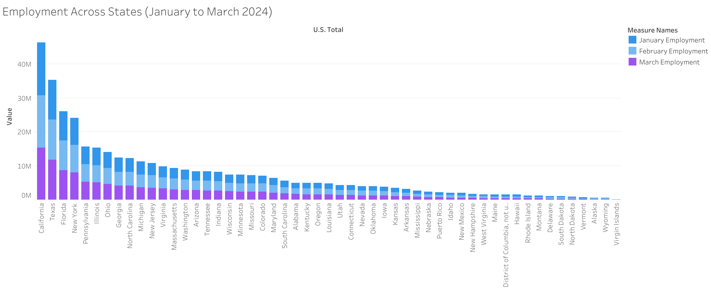

2 Pratiti
Pratiti
2.1 Week 1
Excel
2.1.1 Wednesday
2.1.1.1 Basic Functions
I can now use sum, average, and more functions to select a whole row and make the process more efficient for large datasets.
2.1.1.2 Basic Visualizations
Through using the insert tab, I learned how to choose to represent data with a scatterplot, line plot, bar chart, and more. To customize and format the histogram is easily done in Excel. Each axis can be labeled for the person viewing to understand.
2.1.1.3 Scatter Plot

From the Dataset, we see a trend that as the age of the tree increases, the circumference also increases. This is consistent for different types of trees and helps us see into history of how long a tree survived. Another method is also to count the rings once the tree is cut down. However, using the circumference gives a qualitative measurement of when the tree can still be alive and aged.
2.1.2 Friday
The US Bureau of Labor and Statistics offers many data sets to do with the work force in America. This data is found from civilian unemployment rates over the past 10 years including people of different ethnicity.

The visualization shows there is a peak in unemployment rate in the year 2020-2021 when Covid-19 affected everyday lives of civilians. This graph represents the unemployment dramatic decrease during the pandemic, but also stabilization in 2022.
2.2 Week 2
2.2.1 Wednesday
2.2.1.1 Histogram
I am using the air quality data set which is shows the ozone ppm distribution based on temperature, month and day. Th data was obtained from the New York State Department of Conservation and the National Weather Service. The temperature was taking as the maximum daily temperature at LaGuardia airport. The mean ozone is measured in parts per billion from 13:00 to 15:00 at Roosevelt Island.
I used excel to clean the data through filtration by removing the NA values. I then did exploration analysis.
2.2.1.2 Ozone Histogram

2.2.1.3 Ozone vs. Temp Scatterplot

2.2.1.4 My First Pivot Table

This table shows the difference in averages of ozone in May versus September. The trend shows that the average seems to be higher at the start of the month and decreases gradually. In September there is a general trend of higher ozone levels per day compared to May. This trend may reveal something new about the ozone levels and air quality.
2.2.2 Friday
U.S. Bureau of Labor Statistics
The Consumer Expenditure Surveys (CE) are national studies by the U.S. Bureau of Labor Statistics (BLS) that examine how people in the U.S. spend their money. The CE includes two types of surveys: the Interview Survey and the Diary Survey. The Interview Survey gathers information about significant or ongoing expenses that people can remember over a period of 3 months or more, including large purchases like homes and cars or regular payments like rent and utilities.
CE data are valuable for both government and private organizations that focus on specific population groups, including the elderly, low-income families, urban residents, and individuals receiving Supplemental Nutrition Assistance Program (SNAP) benefits. Economic policymakers use this data to evaluate how policy changes affect living standards among various socioeconomic groups, while econometricians leverage it to build models for predicting economic outcomes.
I plan to break up all the parts of the data to the main sections to compare how much consumers spend on each category in life.
2.3 Week 3
2.3.1 Wednesday
2.3.1.1 Orchard Sprays
An experiment was conducted to evaluate the effectiveness of various orchard spray components in repelling honeybees, using a Latin square design. In this experiment, dry comb cells were filled with specific amounts of lime sulfur emulsion mixed in sucrose solution. Seven concentrations of lime sulfur were tested, ranging from 1/100 to 1/1,562,500, with each concentration decreasing by factors of 1/5, along with a control solution containing no lime sulfur. A had the highest level of lime sulpher while H had no lime sulphur. To assess the bees’ responses, 100 bees were released into a chamber for two hours, and the decrease in solution volume in each cell was measured to determine the repellency of the different concentrations.
2.3.2 Friday
- Pratiti will work on employment and wages in different states collectively -
The Quarterly Census of Employment and Wages (QCEW) provides detailed employment and wage data across various industries, states, and the entire U.S. For the first quarter of 2024, the dataset encompasses private sector employment and wages across all industries and establishment sizes. This comprehensive dataset, sourced from the Bureau of Labor Statistics, allows for an in-depth analysis of employment trends and wage patterns nationwide. The QCEW data is instrumental in understanding the economic landscape, providing valuable insights into employment distribution and wage structures across different sectors and regions.
2.4 Week 4
2.4.1 Wednesday and Friday
2.5 This is a markdown title
in markdown we can create lists:
- item 1
- item 2
- item 3
also we can create enumerated list
- Hola
- Hi
- Namaste
we can do bold, also italic
# Here we are importing numpy with a nickname np
import numpy as np
print(np.absolute(-1))
arr = np.array([1, 2, 3, 4, 5])
print(arr)1
[1 2 3 4 5]# lists are native to python
my_list = [1, 2, 3, 4, 5]
print(my_list)[1, 2, 3, 4, 5]# We will be using a lot of dataframes, so we need pandas library.
import pandas as pd
data = {'Ozone': [41, 36, 12], 'Temp': [67, 72, 74]}
df = pd.DataFrame(data)print(df) Ozone Temp
0 41 67
1 36 72
2 12 742.6 4. Loading csv files
To load csv files into a DataFrame, we use the pandas function read_csv:
df = pd.read_csv('airquality_datasets.csv')Now, let’s load and explore the summary of the airquality dataset.
# Summary of data frame
print(df.info())
print(df.describe())<class 'pandas.core.frame.DataFrame'>
RangeIndex: 153 entries, 0 to 152
Data columns (total 6 columns):
# Column Non-Null Count Dtype
--- ------ -------------- -----
0 Ozone 116 non-null float64
1 Solar.R 146 non-null float64
2 Wind 153 non-null float64
3 Temp 153 non-null int64
4 Month 153 non-null int64
5 Day 153 non-null int64
dtypes: float64(3), int64(3)
memory usage: 7.3 KB
None
Ozone Solar.R Wind Temp Month Day
count 116.000000 146.000000 153.000000 153.000000 153.000000 153.000000
mean 42.129310 185.931507 9.957516 77.882353 6.993464 15.803922
std 32.987885 90.058422 3.523001 9.465270 1.416522 8.864520
min 1.000000 7.000000 1.700000 56.000000 5.000000 1.000000
25% 18.000000 115.750000 7.400000 72.000000 6.000000 8.000000
50% 31.500000 205.000000 9.700000 79.000000 7.000000 16.000000
75% 63.250000 258.750000 11.500000 85.000000 8.000000 23.000000
max 168.000000 334.000000 20.700000 97.000000 9.000000 31.0000002.7 5. Vizualizing the dataset
Let’s dive into visualizations using matplotlib. We’ll start with simple histograms and boxplots, then move on to correlation plots.
2.7.1 Histograms
Histograms help us understand the distribution of the variables. We’ll create histograms for Ozone and Temp.
import matplotlib.pyplot as plt
# Ozone Histogram
plt.figure(figsize=(8, 6))
plt.hist(df['Ozone'].dropna(), bins=20, color='blue', edgecolor='black')
plt.title('Distribution of Ozone Levels')
plt.xlabel('Ozone (ppb)')
plt.ylabel('Frequency')
plt.show()
# Temp Histogram
plt.figure(figsize=(8, 6))
plt.hist(df['Temp'].dropna(), bins=20, color='orange', edgecolor='black')
plt.title('Distribution of Temperature')
plt.xlabel('Temperature (°F)')
plt.ylabel('Frequency')
plt.show()
2.8 Boxplots
Boxplots are useful for identifying outliers and understanding the spread of the data.
# Boxplot for Ozone
plt.figure(figsize=(8, 6))
plt.boxplot(df['Ozone'].dropna())
plt.title('Boxplot of Ozone Levels')
plt.ylabel('Ozone (ppb)')
plt.show()
# Boxplot for Temp
plt.figure(figsize=(8, 6))
plt.boxplot(df['Temp'].dropna())
plt.title('Boxplot of Temperature')
plt.ylabel('Temperature (°F)')
plt.show()

2.9 Correlation Plots
Next, we can explore the correlation between Ozone and Temp, using Month as a categorical variable.
import seaborn as sns
# Scatter plot with regression line
plt.figure(figsize=(10, 6))
sns.scatterplot(x='Temp', y='Ozone', hue='Month', data=df)
plt.title('Temperature vs Ozone Levels by Month')
plt.xlabel('Temperature (°F)')
plt.ylabel('Ozone (ppb)')
plt.show()
# Correlation matrix
corr = df[['Ozone', 'Temp', 'Wind']].corr()
sns.heatmap(corr, annot=True, cmap='coolwarm')
plt.title('Correlation Matrix')
plt.show()

2.10 Week 5

3 Labor Statistics
CSC-477/GCSC-577 Visualization @ ORU
Author: Pratiti Navam
Published: October 4, 2024
4 1. Data Access and Collection Methods
In this section, provide a formal explanation of how the data can be accessed and collected.
Source Overview: Introduce the dataset, specifying its origin (e.g., USDA, WHO, or FAO) and its relevance.
File Formats and Access: Discuss the formats available for the dataset (CSV, Excel, JSON, etc.) and provide instructions for downloading or retrieving the data from the source.
Data Acquisition Procedure: Outline the steps required to acquire the data, including any necessary permissions, logins, or API usage.
Example:
The dataset can be accessed through the USDA's National Agricultural Statistics Service, under the section "Crop Yield Data." It is available in CSV format for public download.5 2. Data Variables and Contextual Framework
This chapter provides a detailed breakdown of the variables within the dataset and contextualizes the purpose behind their collection.
Variables and Definitions:
Define the key variables in the dataset (e.g., crop yield, year, region, precipitation).
Explain why these variables are important for understanding agricultural productivity or policy decisions.
Data Collection Purpose:
- Discuss the underlying objectives for gathering this data. Explain who the primary stakeholders are (e.g., policymakers, researchers, farmers) and how they use this data to make informed decisions.
Contextual Significance:
- Provide historical or contextual background that justifies why this dataset is crucial. Mention specific challenges or global issues this data addresses (e.g., food security, climate change impacts on agriculture).
Example:
The USDA collects crop yield data annually to monitor agricultural production, which informs national food security policies and international trade negotiations.6 3. Analytical Approach and Visualization Techniques
Describe the analytical methodologies and visualization techniques used to explore the dataset in this section.
Analytical Methods:
- Explain the analytical approach, including statistical methods or data preprocessing steps applied to the dataset to prepare it for visualization (e.g., filtering, aggregation, etc.).
Visualization Techniques:
- Detail the types of visualizations used to convey the data’s insights. For each visualization (e.g., line charts for trends, bar charts for comparisons), provide a rationale for its selection.
Key Observations:
- Outline what specific trends, patterns, or anomalies are intended to be highlighted by these visualizations.
Example:
Line charts were used to track changes in crop yields from 2010 to 2020, allowing for clear identification of trends potentially linked to climate variability.7 4. Insights Derived from Data Analysis
This chapter focuses on interpreting the results of your data analysis and visualizations.
Key Findings:
- Summarize the primary insights revealed through your analysis, highlighting significant patterns or trends observed in the data.
Contextual Interpretation:
- Provide an interpretation of these findings within the broader agricultural or policy context. Relate the trends to real-world issues, such as climate change, resource allocation, or food security challenges.
Comparative Analysis:
- If applicable, compare the dataset’s findings with historical data, expected norms, or benchmarks to emphasize any notable deviations.
Example:
The data reveals a 15% decline in crop yields in the Midwest region over the past decade, likely linked to increased occurrences of drought. This decline is more pronounced compared to historical averages.8 5. Discussion of Data Quality and Limitations
In this section, critically examine the quality of the data and the limitations of your analysis.
Data Integrity:
- Assess the quality of the data, noting any issues such as missing or incomplete data, inaccuracies, or inconsistencies.
Limitations of Analysis:
- Discuss any limitations inherent in the dataset that may affect the validity or generalizability of your findings. These could include sample size issues, lack of granularity, or data biases.
Potential Improvements:
- Suggest ways in which the data collection process or analytical approach could be improved to yield better or more actionable insights.
Example:
Some regions had significant gaps in data for the years 2015-2016, which may limit the reliability of trends observed during this period. Future analyses could benefit from more granular data collection at a regional level.9 6. Conclusions and Implications for Future Research
Provide a clear summary of your findings and their potential implications in this section.
Summary of Findings:
- Recap the major insights discovered through the data analysis.
Broader Implications:
- Discuss how the findings could inform future decisions or strategies. This might include agricultural policies, resource management, or further research initiatives.
Recommendations:
- Offer practical recommendations for stakeholders based on your findings. What actions should be considered based on the data?
Example:
The decline in yields suggests a need for improved drought-resistant crop varieties and more resilient farming practices in affected regions.7. References
Include all references to the data source, documentation, and any literature or external research used during the analysis.
Example Reference:
USDA National Agricultural Statistics Service. (2023). Annual Crop Yield Data. Available from: [https://www.10 Week after fall break
(For this weeks assignment, everyone needed to find a dataset from our datasource and give a summary about it.)
https://www.bls.gov/emp/tables/unemployment-earnings-education.htm
In 2023, data from the Bureau of Labor Statistics highlights a strong link between educational attainment, earnings, and unemployment rates. Individuals with higher levels of education tend to earn more and face lower unemployment. Those with advanced degrees, such as doctoral or professional degrees, have the highest median weekly earnings, over $2,100, and the lowest unemployment rates, under 2%. Master’s degree holders also enjoy relatively high earnings of $1,737 per week, with a low 2.0% unemployment rate. Bachelor’s degree holders earn $1,493 weekly with a 2.2% unemployment rate.
As educational attainment decreases, so do earnings, while unemployment rates rise. Individuals with an associate’s degree earn $1,058 per week with a 2.7% unemployment rate, while those with some college but no degree earn $992 weekly with a 3.3% unemployment rate. High school graduates see further declines, earning $899 per week with a 3.9% unemployment rate. Those with less than a high school diploma face the greatest challenges, with the lowest median earnings of $708 per week and the highest unemployment rate of 5.6%. Overall, education plays a key role in determining both income potential and job stability.